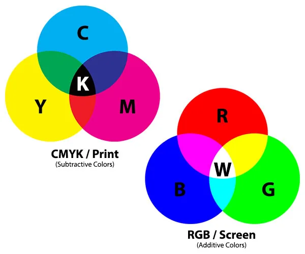

RGB Kleurmodel
In het RGB-kleurmodel worden kleuren gemaakt door verschillende hoeveelheden rood (Red), groen (Green) en blauw (Blue) te mengen. Elke kleur kan 256 verschillende tinten hebben, variërend van 0 tot 255. Bijvoorbeeld, pure rood wordt weergegeven als (255, 0, 0).
CMYK Kleurmodel
Het CMYK-kleurmodel staat voor Cyaan, Magenta, Geel en Zwart (Key). Het wordt voornamelijk gebruikt in drukwerk. Door verschillende percentages van deze kleuren te mengen, kunnen verschillende kleuren worden gecreëerd. Bijvoorbeeld, puur rood in CMYK wordt weergegeven als (0, 100, 100, 0).
Pixels en Resolutie
Een pixel (afkorting voor Picture Element) is de kleinste eenheid van een digitale afbeelding of grafische weergave. Resolutie verwijst naar het aantal pixels dat een scherm of een afbeelding in de breedte en hoogte heeft. Hoe hoger de resolutie, hoe scherper de afbeelding.
Standaard beeldschermen hebben vaak een resolutie van 1920x1080, wat betekent dat het scherm 1920 pixels breed en 1080 pixels hoog is. Een hogere resolutie resulteert in een scherper beeld, maar vereist ook krachtigere grafische verwerkingseenheden om de afbeeldingen weer te geven.